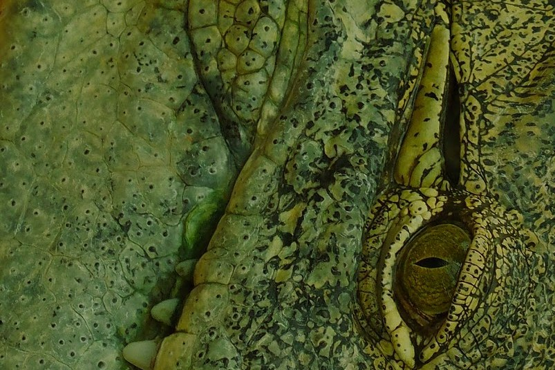

Crocodile Skin

Translated from the Polish original.
The Storm
Tomasz and Daria quicken their pace. The black clouds that appeared on the eastern horizon a quarter of an hour ago have already covered most of the sky. The sun still illuminates the bales of hay standing in the fields from the west, but the wind has picked up and it looks like there will be a storm. It is hot and humid, as usual in the vicinity of Lisia Góra at the beginning of August. The asphalt rural road turns into a sandy path and now leads along the edge of the forest.
“Look, there in the field,” Daria points to a young buck and two does grazing in the meadow.
“Well, you have good eyesight,” Tomasz praises. Father and daughter stop and watch the animals, still unaware of the people, as they are busy nibbling the grass. If they looked west towards the pair on the path, they probably wouldn’t notice them either, as they would be blinded by the low sun. Tomasz slowly reaches into his backpack for a camera with a telephoto lens and aims at the small herd. He composes the shot through the viewfinder and takes a quick series of photos.
“Did you get them?” Daria asks.
“Sure, I have the whole family,” Tomasz confirms.
“Show me,” the daughter asks.
Tomasz turns on the photo preview on the back screen of the camera and directs it towards Daria. In the photo, the young buck looks ahead, presenting his impressive antlers, and the females nibble on the yellowing grass. Above the idyllic scene hang incongruous black clouds.
“Pretty good,” Daria admits. She likes the photo, although she usually finds Tomasz’s photographic hobby a bit boring. She is more interested in words than pictures.
“But you’d rather catch some storks or cranes on camera than these deer, right?” Daria suggests. She knows that Tomasz is a bird enthusiast.
“Yesterday early in the morning on a photo walk, I managed to get two cranes and a deer in the same frame,” Tomasz replies.
“Show me,” Daria asks.
“Later. Now let’s better move on, or the rain will catch us,” Tomasz suggests and puts the camera away.
Father and daughter head north quickly, towards Lisia Góra. The wind tangles Daria’s long light brown hair. The moisture in the air condenses and turns into drizzle. The sun has now hidden behind the clouds, and it has suddenly become quite dark. From the depths of the forest, a growing rustle of leaves and a prolonged barking can be heard.
“That barking is ominous,” Daria shudders. “Could it be Cerberus?”
“Rather, it’s a male deer like the buck we just met. With only one head,” Tomasz jokes.
“Do deer bark too?” the girl wonders.
“Absolutely, you can always hear their barking here, especially early in the morning or in the evening,” Tomasz replies. “When I was your age, I also thought it was some dogs barking. But my grandfather, your great-grandfather, remember, his name was Tadek? Well, he knew about nature and from him I found out how it is. We often walked together in a small forest that was near his and grandmother’s house in Łabędziowo.”
“What is this Łabędziowo?” Daria asks.
“A suburb of the city of Gliwice. It was the first city I went to alone when I was your age. You probably know this story?”
“Well, I don’t think so,” Daria hesitates. “Maybe you’ll tell me?”
“Sure, but not right now. The weather is getting more and more interesting.”
The drizzle turns into a cutting rain, and the wind picks up even more. Lightning flashes between two clouds in the distance. Daria starts counting: one, two, three, ..., eleven, twelve seconds. She quickly multiplies the speed of sound, 343 meters per second, by twelve.
“The lightning struck about four kilometers from here,” she explains.
“Well, you’re good at arithmetic,” Tomasz says.
“I think we’ll make it home before Zeus gets really angry,” Daria hopes.
Both pull their hoods over their heads against the rain and march on. The path continues along the edge of the forest, but the pair turns right through the field, along an irrigation ditch, taking a shortcut towards Lisia Góra. After a while, they are walking on a gravel road towards the grandparents’ house. Lightning flashes again, and this time the thunder is heard much faster. Water streams down their faces despite the hoods. They jump over growing puddles and newly formed streams crossing the road. It is now almost constantly thundering. Tomasz takes Daria’s hand, and both start a quick trot towards the gate of the house, which can be seen a few dozen meters away. They run into the garden and wade through the waterlogged lawn to the house.
The Fire
Tomasz opens the door, and immediately a wave of heat hits them. The house is heated to almost sauna temperature, but this does not surprise them: Jędrzej, Daria’s grandfather, has a habit of lighting a large fire in the fireplace, especially on cool, rainy days. He doesn’t like drafts and keeps the windows closed, so the house has a subtropical climate. He is now sitting by the fireplace and adding logs to it.
“Did it get you wet?” he asks.
“A little, but in this Hadean atmosphere, everything will dry quickly,” Daria replies.
“They say it’s hot in hell and sinners are roasted. But I think that if there is to be great suffering, it must be rather cold,” Jędrzej explains. “The worst is to freeze,” he says and throws another log into the fire.
Daria takes off her wet hoodie and throws it on the floor. Tomasz pants and unbuttons his shirt. Jędrzej increases the air supply to the stove, and the fire starts to burn even more vigorously. Daria glances at the thermometer: 28°C. It has been worse, she thinks. A few days ago, the temperature in the living room with the fireplace reached thirty-two degrees.
“Where is the rest?” she asks.
“Terencja is dozing, and Afarin went to the other bedroom and is probably watching some series. Both complained that it was too hot for them,” Jędrzej explains.
“I wonder why,” Daria mutters under her breath.
“What did you say? I can’t hear you,” Jędrzej complains.
“Nothing, nothing, I was talking to myself. Tomasz, tell me, what was that trip to Wielbłądowo?” she asks.
“To Łabędziowo,” the father corrects.
“You don’t know this story? I’m surprised. I think Tomasz didn’t tell you so that you wouldn’t get the same idea,” the grandfather says.
“Well, okay, but what was it all about?” Daria impatiently asks.
“Okay, sit down and wait a moment, I’ll tell you,” Tomasz agrees, then goes to the kitchen and makes tea. Daria takes off her leggings and is left in just her panties and a T-shirt. Jędrzej throws a log into the fire, snuggles deeper into the armchair, and wraps himself in a blanket. Tomasz puts the teapot with tea on the table and small glasses around it.
“So?” Daria urges. Tomasz ceremoniously wraps the teapot in a woolen napkin and looks absentmindedly at the still life he has set on the table.
“Do you think that if you stare at the teapot, the tea will steep faster?” Daria mocks.
Terencja enters the living room in a negligee and yawns.
“Is there tea for me too?” she asks.
“Sure is,” Tomasz mutters and pours the amber liquid into the glasses. Terencja takes one and sits on a chair far from the roaring fire.
At this moment, Afarin enters and says with a slight Persian accent, “Nice, tea.” She takes the second glass and quickly moves away from the fireplace. She blows on the steaming tea while standing by the door. Tomasz hands a glass to Jędrzej, who struggles with the blanket to reach for it.
“How can you drink this infernal drink in such heat?” Daria wonders. “Tomasz Gramoła, now that you’ve finished with this ceremony, maybe you’ll finally deign to tell the famous story about the trip to Wielbłądowice?”
“Not to Wielbłądowice but to Łabędziowo,” the father corrects.
“Swans or camels, it’s all the same,” she puns about the zoological meanings of the Polish place names. “Did you go there for those swans?”
“Haha, I don’t remember. Maybe more for the deer, or for the tanks. Anyway, it was like this.”
The Crocodile
“I was exactly as old as you are now, nine. I know this because in those days most children in Poland went to what was called First Communion at that age, and I did too. It was a church event during which kids dressed up formally: boys in suits and girls in white frilly dresses, and in these outfits, they marched with large candles through the nave of the church, sang something, and it was quite complicated and had to be practiced for a few weeks.”
“So something like the Panathenaea, with processions, chariot races, and gifts for the gods?” Daria asks.
“Exactly, something like that, but with only one god. Or a maximum of three, depending on how you treat the Christian Trinity,” Tomasz specifies.
“Only one god sounds a bit boring, and besides, I don’t like churches,” Daria adds.
“Some churches and cathedrals are beautiful, but never mind. The point is that in those days it was hard to buy anything, including children’s clothes. I needed elegant shoes for this communion, and Terencja was looking for them in the shops at that time.”
“Well, no, I was the one who got those shoes, not Terencja,” Jędrzej protests and reaches for another log. “I found nice, black ones, made of real leather.”
“Okay, I don’t really remember those shoes, but I do remember that I had a dark green pouch,” Tomasz continues.
“What pouch? A paper bag with powder or something?” Daria wonders, panting and wiping sweat from her forehead.
“No, it’s a bag for money, keys, documents, and so on. It had a strap for the wrist. It was made of green imitation crocodile leather, and I was quite proud of it.”
“Well, it seems to me that it was real crocodile leather, not imitation,” Terencja interjects, taking another sip of tea.
“And I hope not, because it would be a shame for the crocodile,” Daria protests.
“Crocodile? I don’t understand,” Afarin complains.
“You heard this story a few times already, it’s about this fun trip I did when I was nine,” Tomasz explains switching to English. “The crocodile leather wrist bag is where I kept my money and keys, and my pocket knife.”
“Okay, now it’s clear,” Afarin confirms in Polish.
“Just like you, on some days I finished school early, around noon,” Tomasz continues. “Terencja worked in a small neighborhood library at that time, and usually after school, I went there and browsed through books.”
“It would be nice if you also worked in a library, or in a bookstore,” Daria fantasizes. “I would have so many books to read.”
“But that day the weather was nice and sunny, so I didn’t feel like sitting among dusty tomes; I was in the mood for some adventure. I thought that I hadn’t seen my grandfather Tadek and grandmother Halina for a long time. They lived in Łabędziowo, about an hour and a half by public transport from our housing estate near Bytom. I thought I would pay them a small visit and be back home before evening. I put my pocket knife and some money in the pouch, put on my sunglasses, and with the pouch stylishly hanging on my wrist, I headed to the tram stop that went to the city center.”
“I would probably take a backpack and bring a bottle of water and a croissant or a muffin, not just some pouch,” the daughter criticizes. “At least did you have a watch?”
“I had an electronic Japanese watch, but without messages and without GPS, because GPS probably didn’t exist then. But besides the time, it also had a calculator,” Tomasz specifies. “At that age, I already knew how to get to the center, so there was no problem with that. I caught tram number nine and after a quarter of an hour, I was already in the city center at the bus station,” Tomasz spins the story.
“And people weren’t surprised that a kid was riding the tram alone?” Daria asks.
“Not really, there were a lot more children back then, and adults didn’t worry about us as much as they do now. But at the bus station, I met a neighbor who asked what I was doing there alone. I explained that I was going to my grandfather’s, and he advised me which bus to take to Gliwice.”
“So a nice neighbor,” Daria praises.
The Alarm
The storytelling is interrupted by a shrill beep coming from a small box on the shelf against the wall. Tomasz takes the beeping plastic device and hands it to Jędrzej.
“What’s with this junk?” he asks, slightly irritated.
“It’s a carbon monoxide detector. Maybe the battery is low?” Jędrzej hypothesizes. He examines the box from all sides, shakes it, but the beeping does not stop. The red LED blinks persistently.
“Let me see,” Tomasz takes the box and goes outside with it. The beeping stops. He returns to the overheated living room and says:
“It stopped,” but at that moment the box starts beeping again.
“Maybe there really is too much carbon monoxide here?” Daria wonders.
“Problem?” Afarin asks.
“Maybe,” Jędrzej agrees and starts examining the stove.
“It’s better to put out this fire and go outside, or we’ll poison ourselves,” Tomasz suggests.
Jędrzej takes care of putting out the fire, and Tomasz explains to Afarin what’s going on, hands everyone coats and cloaks, and leads the family into the garden. Meanwhile, the rain has subsided, turned into a light drizzle, most of the clouds have dispersed, and the last rays of the setting sun have painted a semicircle of a rainbow in the western sky. Jędrzej joins the group on the lawn and says:
“The fireplace is out. I left the windows open. We have to wait until it airs out.”
“What was the problem with the stove?” Daria is curious.
Jędrzej and Tomasz start discussing various theories related to the stove and chimney. The beeping of the detector can still be faintly heard from the house. They have to stay in the garden until it stops, so the women with Daria leave the arguing men and go to the field road beyond the garden to get a better look at the rainbow hanging over the forest.
The Croissant
Daria and Tomasz leave the Maltański Hotel, cross the street, and head towards the Kraków market square. It’s Sunday, still quite early. Afarin, Jędrzej, and Terencja are sleeping off last night’s exploration of Kazimierz. There aren’t many people on Planty. Some lady is walking a very long dachshund on a leash.
“Let’s practice Spanish,” Daria suggests. She already knows several languages well, but in Spanish, she is still at a beginner level.
“Perrito salchicha?” Tomasz begins.
“Sausage dog?” Daria guesses.
“Almost. That’s what they call dachshunds, like the one we just passed,” Tomasz explains. “Cielo?” he continues.
“Sky,” Daria replies.
“Arcoiris?” Tomasz chooses a more difficult word.
“Rainbow,” Daria has no trouble with it.
“Corzo,” Tomasz moves to a higher level.
“Deer? Or maybe a doe?” the girl hesitates.
“A roe deer. A deer in general is called ciervo,” Tomasz specifies.
“Okay, enough with these forest creatures,” Daria impatiently says.
They leave Planty and turn into Franciszkańska Street.
“Forest creatures are satyrs, sileni, dryads, nymphs, and centaurs. And we talk about forest fauna, not the Roman equivalent of a satyr,” Tomasz pontificates. Daria rolls her eyes at this joke, but Tomasz doesn’t notice.
They turn into Bracka Street. The café staff are bustling about, opening the establishments and greeting the first customers.
“How do you say café in Spanish?” Daria is curious.
“Actually, cafés that only serve coffee are rare in Spain,” Tomasz reminds her. “Most establishments serve both as cafés and bars, and they are called bar. Chocolate caliente?” he continues the lesson.
“Hot chocolate,” the girl translates into Polish. That’s what I’ll order for breakfast. And a croissant,” she plans.
They come out onto the market square. They head towards the Adam Mickiewicz monument. A few tourists are already sitting on the steps of the monument, taking selfies. Pigeons lazily fly from the poet’s head to the ground and wander around the square, pecking at grains and crumbs from between the cobblestones. Behind the monument, on the northeastern part of the square, coachmen are starting their day’s work, adjusting the horses’ harnesses. Daria and Tomasz pass them and enter the Wedel chocolate lounge. They choose a table in the back of the café, by the wall with portraits of the Wedel family. They have the place to themselves, as there are no other customers yet. The waiter brings stacks of menus, and Daria and Tomasz look for their favorite breakfast items in them.
“I don’t know if I want coffee or chocolate,” Tomasz ponders.
“Why not both?” Daria suggests, who is a maximalist when it comes to café treats.
“I’ll start with coffee and then we’ll see,” Tomasz decides. “An espresso and a rogalik, please,” he tells the waiter using the old-fashioned Polish word for croissant.
“Do you mean a croissant?” the waiter pedantically corrects. Daria snorts with suppressed laughter.
“Do you perhaps have chocolate con churros?” she asks innocently.
“What? Choco what?” the waiter doesn’t understand.
“If you don’t understand, you probably don’t have it. But it’s okay: then I’ll have a large medium-bitter hot chocolate and a small croissant,” she says the last word with an exaggerated French accent. “Merci beaucoup!” she adds.
The waiter looks at the couple quizzically but obediently notes the order on his gadget and moves away from the table. Daria continues to study the various versions of hot and cold chocolate described in flowery language in the menu. After a few minutes, the waiter reappears with the ready order. Daria dips the corner of the croissant into the cup of chocolate. Tomasz takes a small sip of coffee.
The Portrait
A woman with a girl Daria’s age enters the café. They look around the room and approach the wall with portraits. They comment on these paintings in Ukrainian. The woman takes out her phone and turns to the couple:
“Can you take a picture of us with these decorations?” she holds out her phone towards them.
“Sure,” Daria replies. She takes the phone and carefully frames the woman and the girl so that the portraits are visible in the background. She takes three different photos and shows them to the Ukrainians on the screen.
“Nice café,” the little one says.
“My favorite,” Daria confirms. “Are you from Ukraine?” she inquires.
“Yes, from Odesa,” the woman replies.
“Speaking of favorites, Artem Kotenko is one of my favorite singers,” Daria informs.
“Seriously? I really like him too,” the girl is happy. “Thanks for the photo!”
The Ukrainians sit at the neighboring table and immerse themselves in reading the menu. Tomasz looks thoughtfully at the portraits of men in old-fashioned clothes and says:
“This middle one, Emil, reminds me a bit of my grandfather Tadek. He also had very white hair and dark brown, almost black eyes. Only he didn’t wear a beard and mustache. And he dealt with metal smelting, not chocolate melting,” he adds with a smile.
Daria rolls her eyes again, this time a full 360°, but something piques her interest:
“You didn’t finish the story about visiting your grandfather, which you started on Lisia Góra. What happened next?” she asks.
“Where did we leave off?”
“You said that the neighbor advised you on how to get there or something,” Daria recalls, putting another piece of chocolate-dipped croissant into her mouth.
“Right, I took the bus from Bytom to Gliwice, and after about half an hour, I was already there, but that wasn’t the end of the journey. Łabędziowo is outside the city, near a large forest, and I had to take another bus,” Tomasz recounts, finishing his coffee, and continues. “From what I remember, I managed somehow, deciphering the schedules and asking people. So in the early afternoon, I rang the doorbell of my grandparents’ apartment. Tadek opened the door and let me in. ’Are your parents downstairs?’ he asked. I explained that I had come alone, but he took it as a joke. He explained that grandmother was on a pilgrimage and that he was home alone.”
“On a pilgrimage? Does that mean she walked to Santiago de Compostela?” Daria guesses.
“Something like that, but I doubt she walked anywhere. Maybe she went by bus to see the pope or some holy place,” Tomasz hypothesizes. “Anyway, she wasn’t at home, and we spent the afternoon just the two of us. You know, memory is strange. It was so long ago, and I’ve told this story so many times that I’m not entirely sure what exactly we did then. It seems to me that we went for a walk in the forest, but it’s possible that this is a false memory that arose because during other visits we often did that. Tadek was a great forest enthusiast.”
“So a bit like you. You also like forests and mountains,” Daria reminds.
“True. The fact that during one such walk in the forest with Tadek, I saw deer for the first time, I remember very well, even though I must have been only about four years old then. I ran after them to see them up close, but of course, they were faster than me. And I also remember the tanks,” Tomasz adds.
“What tanks? Was there a war then? You’re not that old, are you?” Daria wonders.
“There was no war, but there was a tank factory there, and they tested them in this forest on a bumpy field road called the tank road,” Tomasz explains.
“An original name,” Daria scoffs, cleaning her cup of the remaining chocolate with her finger. “But what about that visit?”
“As I said, probably nothing special. Grandfather probably expected Jędrzej and Terencja to appear until the end, even when I said I had to catch the bus to get home before dark. I don’t know what was going through his mind, but he didn’t stop me. So we said goodbye at the bus stop, and I went back.”
“And did you make it or did you have to spend the night somewhere in the fields?” Daria is curious, licking her chocolate-covered finger clean.
“The next scene I remember is walking along the tram tracks somewhere near Zabrze. This city lies between Gliwice and Bytom, so the journey was going in the right direction, but it was getting late, and there were fewer connections. I saw that a tram going to Bytom was approaching, and I waved at it as if I were hitchhiking on a car road. It was a bit out of desperation; I didn’t think it would actually stop, but it did. Maybe because of my young age?” Tomasz boasts, sticking crumbs of the croissant on his finger and transferring them to his mouth.
“Tram hitchhiking, great. Maybe we can catch a tram to Kazimierz this way?” the girl suggests.
“The tram took me near the housing estate, and finally, at dusk, I appeared at home. I thought there would be a scandal, but instead, there was a ceremonial welcome! It turned out that Terencja found out from the neighbor (the one from the bus station) where I had gone, somehow got through to Tadek, who explained that his grandson had gone back home. Of course, she was furious at him for letting me go, but what could he do? Tadek wouldn’t hurt a fly, let alone imprison his grandson,” Tomasz justifies his grandfather, and Daria looks at the menu again.
“In any case, Terencja, Jędrzej, the neighbor, and his wife, they all sat there together and wondered what to do next, and Jędrzej despaired that he had found new shoes in vain. So when I finally showed up, there was a big celebration. And of course, I had to try on those shoes right away.”
“You made up that last part, didn’t you?” Daria guesses.
“Well, what are you talking about, it’s the unadulterated truth!” Tomasz protests.
At this moment, Afarin, Terencja, and Jędrzej appear in the café, still sleepy. Afarin hugs her daughter, and Terencja and Jędrzej struggle into their chairs.
“Did you really make Tomasz try on the shoes right away when he returned barely alive from the trip to Łabędowice?” Daria demands an answer.
“What shoes, what are you talking about?” Terencja doesn’t get it.
“Well, the shoes for the first Panathenaea,” Daria impatiently says. “The ones made of crocodile leather!”
“Crocodile? I don’t understand anything,” Afarin complains.
“We don’t either,” Terencja explains. Jędrzej just shakes his head, completely confused.